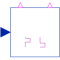
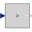
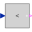
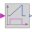
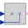
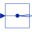
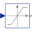
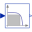
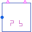

Signal2mPulseGeneric control of 2*m pulse rectifiers |

|
Diagram
{kind=link}
Information
This information is part of the Modelica Standard Library maintained by the Modelica Association.
General information about controllers is summarized in Control.
Parameters (7)
| useConstantFiringAngle |
Value: true Type: Boolean Description: Use constant firing angle instead of signal input |
|---|---|
| constantFiringAngle |
Value: 0 Type: Angle (rad) Description: Firing angle |
| useFilter |
Value: true Type: Boolean Description: Enable use of filter |
| f |
Value: 50 Type: Frequency (Hz) Description: Frequency |
| fCut |
Value: 2 * f Type: Frequency (Hz) Description: Cut off frequency of filter |
| vStart |
Value: zeros(m) Type: Voltage[m] (V) Description: Start voltage of filter output |
| firingAngleMax |
Value: Modelica.Constants.pi Type: Angle (rad) Description: Maximum firing angle |
Connectors (4)
| firingAngle |
Type: RealInput Description: Firing angle (rad) |
|
|---|---|---|
| fire_p |
Type: BooleanOutput[m] |
|
| fire_n |
Type: BooleanOutput[m] |
|
| v |
Type: RealInput[m] Description: Voltages |
Components (12)
| constantconstantFiringAngle |
Type: Constant |
|
|---|---|---|
|  | positiveThreshold |
Type: GreaterThreshold[m] |
|  | negativeThreshold |
Type: LessThreshold[m] |
|  | timerPositive |
Type: Timer[m] |
| timerNegative |
Type: Timer[m] |
|
|  | greaterPositive |
Type: Greater[m] |
| negativeEqual |
Type: Greater[m] |
|
| gain |
Type: Gain |
|
|  | replicator |
Type: Replicator |
|  | limiter |
Type: Limiter |
|  | filter |
Type: Filter[m] |
| realPassThrough |
Type: RealPassThrough[m] Description: Pass through in case filter is off |
Used in Components (3)
|
Modelica.Electrical.PowerConverters.ACDC.Control
Control of 2 pulse bridge rectifier |
|
|
Modelica.Electrical.PowerConverters.ACDC.Control
Control of 2*m pulse bridge rectifier |
|
|  |
Modelica.Electrical.PowerConverters.ACDC.Control
Control of 2*m pulse center tap rectifier |